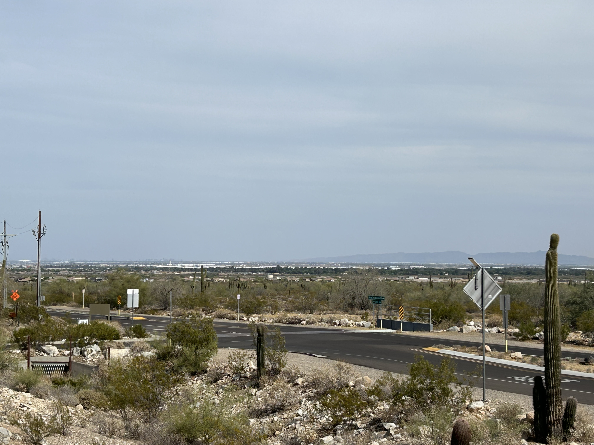
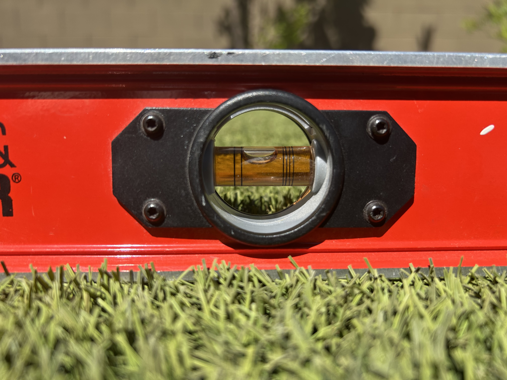

Discover the Evidence Behind Cube Earth!
We only care about FACTS here at Cube Earth Theory, and we know that you do to! For that reason, we only publish the most airtight evidence that our team of expert researchers can find.
Contents
A Model of the Cubic Earth
Photo Evidence of Earth's Edge
Proof of Flat Ground Surface
Location of Earth's Corners
Cubes in Nature
A Model of the Cubic Earth
When visualizing the earth as a cube, it can be difficult to avoid simply translating a model of the globe into the shape of a cube. This approach is absolutely ridiculous and is almost as unscientific as depicting the earth as a sphere in the first place. In the current Cubic Earth model, all of our known continents are located on the top face of the earth, with antarctica bordering the edges, preventing the oceans from flowing over the edges of the cube. The scaled-visualization shown below was made using our own software to depict what our planet may look like. Note that our software is limited and may not be true to scale. As you can see in the latter half of the video, we do not know what is on the sides of the earth, represented by the question marks on the sides of the model.
Photo Evidence of Earth's Edge
The following photo was taken to demonstrate the inconsistancies of the current spherical earth model. As you can see, distant features such as the mountains and buildings are still clearly visible, despite being miles away. If the surface of the earth did in fact curve, these details would not be visible.

Proof of Flat Ground Surface
Using elementary measurements, it is clearly seen that the surface of the earth is naturally flat. As seen on the level device, the bubble is perfectly in the center. If the ground was curved as with a sphere, the level would not measure a flat surface.

Location of Earth's Corners
A common question we get asked is where the eight vertices of the earth are located. As seen in our scientific model of the earth from earlier, each corner on the top half of the earth is covered in ice, located in what we know as Antarctica. The hostile nature of the continent as well as legal barriers prevents us from exploring these corners at present, but we plan to raise money to purchase a small (but robust!!!) fishing boat in order to perform our own field research. We are still accepting applications for this potential research venture at present.
Cubes in Nature
The following table lists a variety of natural phenomena and how they are formed. Given the sheer variety of cubes in nature, it is only natural to assume that the same must be true of the earth itself.
| Phenomenon | Location | Method of Formation |
|---|---|---|
| Crystals/Minerals | Caves and Rocks | These crystals are formed in the earth, likely reflecting the greater structure of the entire planet. |
| Ice | Glaciers, Northern Oceans, Cold Climates | As water freezes, it often takes a cubic shape. As many know, the world is mostly covered in water, which is a major hint towards its true structure being a cube. |
| Sugar | Derived from plants | Sugar crystalizes into cubes a lot of the time, reflecting matter's tendency to form cubes on the planet earth. |